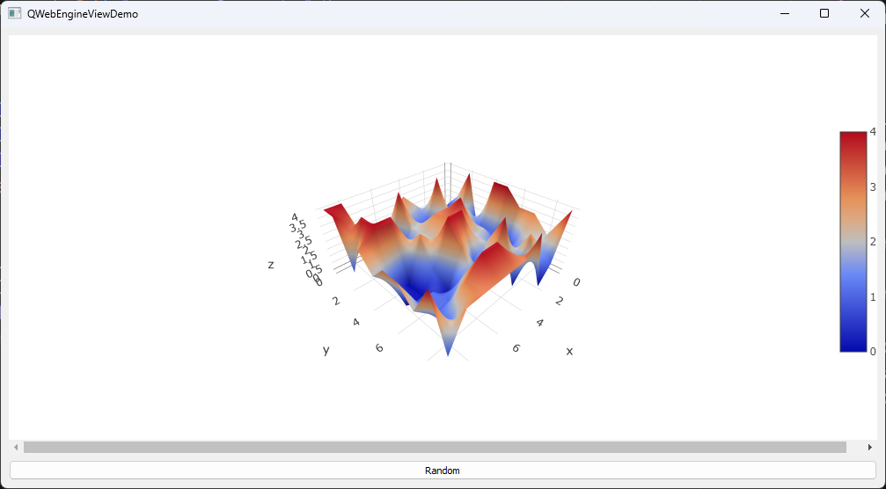

Integrating Interactive Web Visualizations in C++ Applications with QWebEngineView
Introduction
Modern application development often requires the integration of rich, interactive data visualizations to enhance user experience. This article explores how to leverage QWebEngineView in a C++ application to display interactive Plotly charts, demonstrating a powerful way to combine web technologies with Qt applications.
QWebEngineView: A Brief Overview
QWebEngineView, part of the Qt WebEngine Widgets module, is a widget for rendering web content using the Chromium browser engine. Introduced in Qt 5.4 as a replacement for QWebView, it offers several key features:
- Modern web standards support (HTML5, CSS3, JavaScript)
- Seamless C++ and JavaScript integration via Web Channel
- Extensive JavaScript support and interaction
- Customizable browser behavior and appearance
Project Setup
To get started, let’s take a look at the project structure and configuration. Below is the tree structure of the project:
1 | ├── CMakeLists.txt |
The CMakeLists.txt file provided in the project contains the necessary configuration for building the application. Below is a brief look at the essential parts of this setup:
1 | cmake_minimum_required(VERSION 3.15) |
This CMake configuration ensures that the application is properly linked with the necessary Qt components, particularly Qt5::WebEngineWidgets, and is built with all required resources included.
Initialize QtWebEngine in Main Window
First, we set up the data model and communication channel:
model_is assigned a new instance ofdataModel, a custom class designed to manage the application’s data. This class likely exposes data to both C++ and web ends via Qt’s property system.A
QWebChannelobject namedchannelis created.QWebChannelserves as a bridge for communication between C++ and JavaScript in the web view. ThedataModelinstance is registered with this channel usingregisterObject, making it accessible from the JavaScript side under the name"dataModel".
Then, we configure the web view:
webView_is assigned a new instance ofQWebEngineView, which will display web content within the application. ThewebView_is connected to the previously createdQWebChannel.The web view is set to load an HTML file (
chart.html) from the application’s resources using theqrc:/URL scheme, which accesses files embedded in the application’s binary.
This setup creates a basic integrating web-based visualizations with C++ backend functionality in our Qt application.
1 | // mainWindow.cpp |
Expose data and signal via dataModel
This section demonstrates how to create a data model class that exposes data to both C++ and JavaScript sides of the application using Qt’s property system.
The essential setup for the dataModel class is defined as follows:
A
Q_PROPERTYmacro is used to expose thedataSet_member variable as a property nameddataSet.- This property is of type
QJsonDocument, allowing for flexible data structures. - The
MEMBERkeyword directly binds the property to thedataSet_member variable. - The
NOTIFYkeyword associates the property with thedataSetChangedsignal.
- This property is of type
A public
setDatamethod is provided to update thedataSet_and emit thedataSetChangedsignal when data is changed on C++ side.
This setup allows for seamless data binding between C++ and JavaScript, with automatic notifications when the data changes.
1 | // dataModel.hpp |
Integrating QWebChannel with Plotly
In our chart.html file, we have a simple HTML structure with a head and body. The head section loads two crucial scripts:
- Plotly: A powerful library for creating interactive and visually appealing charts.
- QWebChannel: A Qt-specific script that enables seamless communication between our C++ backend and JavaScript frontend.
We begin by establishing a connection to our dataModel object through QWebChannel. Once connected, we link the dataSetChanged signal from our dataModel to a function called onDataChanged. This setup ensures that whenever our data changes in C++, the onDataChanged function is automatically triggered.
The onDataChanged function is responsible for plotting the chart. It first clears any existing content in the plot area. Then, it retrieves the new data from our dataModel and structures it for use with Plotly. In this example, we’re creating a 3D surface plot using x, y, and z data from our model.
To render the chart, we create a new div element, append it to our plot area, and use Plotly.newPlot to generate the 3D surface chart.
This implementation demonstrates a dynamic, data-driven 3D chart that updates automatically in response to changes in our C++ code. It showcases how Qt’s QWebChannel can be leveraged to create responsive, interactive web content within Qt applications, bridging the gap between C++ backend logic and JavaScript frontend visualization.
1 | // chart.html |
Generate Data and Update Chart
Now that we have set up our web view and data model, let’s bring everything together in our mainWindow.cpp file. We implement functionality to generate random data and ensure that initial data is created when the web view finishes loading.
The randomData function generates a mesh grid with x and y coordinates, along with random z values. This data is then set to the dataModel and triggers the dataSetChanged signal, which we discussed earlier. This mechanism allows for dynamic updates of the 3D surface plot in response to user actions or automatic triggers.
1 | // mainWindow.cpp |

Conclusion
In this article, we’ve explored the integration of interactive web visualizations into C++ applications using QWebEngineView. This powerful combination allows developers to leverage the rich ecosystem of web-based visualization libraries while maintaining the robustness and performance of C++ applications.
By demonstrating how to incorporate Plotly charts into a Qt application, we’ve shown how to create dynamic, data-driven visualizations. This technique opens up a wide range of possibilities for creating sophisticated applications suitable for fields such as scientific visualization, data analysis, and interactive reporting.
The QWebEngineView approach provides a flexible and efficient solution for developers looking to create powerful, interactive visualizations within robust C++ applications, meeting the evolving needs of our increasingly data-centric world.
Potential Pitfalls and Solutions
Deployment Issues: Ensure that QtWebEngineProcess.exe is present in the same directory as your application executable. This dependency is handled by the CMakeLists.txt configuration in this demonstration.
Building QWebEngine with VCPKG: When using VCPKG to build QWebEngine, certain MSVC components are required:
- Active Template Library (ATL)
- Microsoft Foundation Class (MFC)
If these components are not installed. follow the steps:
- Open Visual Studio Installer
- Modify your Visual Studio installation
- Navigate to “Individual Components”
- Search for and select both ATL and MFC
- Install the selected components